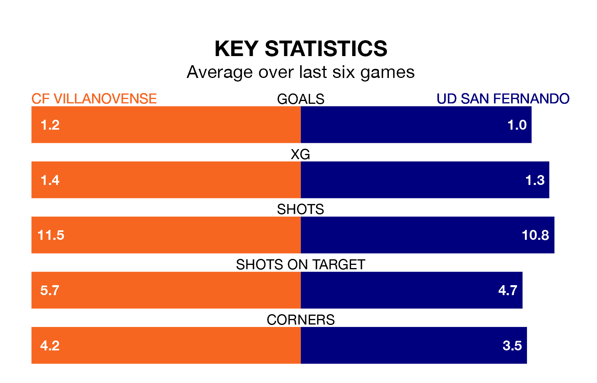

UD San Fernando travel to the Estadio Municipal Villanovense looking to secure a first win in six Segunda División RFEF Group 5 games against CF Villanovense on Sunday.
San Fernando have lost three and drawn two matches since they last earned three points – against Montijo on March 17.
They face a Villanovense side who have won two and drawn one over that time.
San Fernando are 16th in the table after 32 games, of which they have won nine and drawn nine, earning 36 points.
Villanovense are six places ahead of the away team in 10th, with 12 wins and seven draws putting them on 43 points.
With 26 goals in 32 games so far this season, San Fernando are scoring at below the league average rate with 0.8 goals per game. And they are conceding more than average, letting in 38 goals at a rate of 1.2 per game.
The hosts are also below average scorers, with 1.0 goal per game, compared to a league average of 1.1. They have also conceded 1.0 goal per game.
In the last three years, Villanovense and San Fernando have played each other on three occasions. Villanovense won one of them and San Fernando the other.
Their last meeting was on December 17, when San Fernando won 2-0 at home.
Villanovense's last match was on April 20, a 2-1 win against Guadalajara, with Jesús Sillero Martín and Mario González Casado getting the goals for Villanovense.
San Fernando lost 2-1 against CDA Navalcarnero last time out, on Sunday, with Stéphane Serbourdin Cruz on the scoresheet.
Updated: 07:59 (UTC), 26/04/24